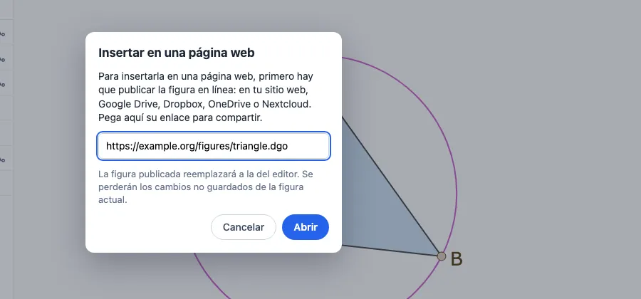
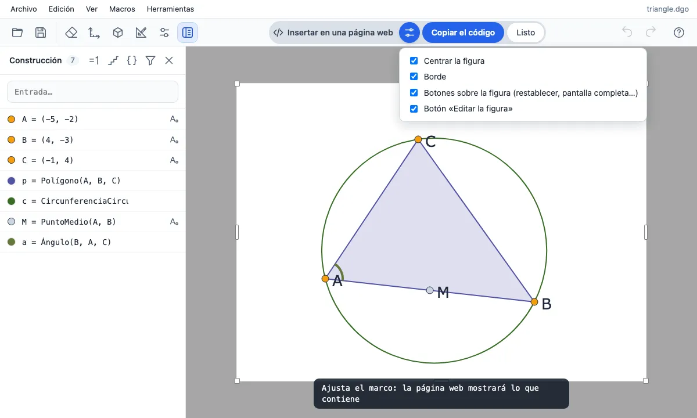

Insertar en una página web
Una figura de DocGeo puede mostrarse en cualquier página web — tu sitio, un curso de Moodle, un blog — y manipularse allí como en DocGeo. Basta con pegar en el HTML de la página un código que prepara el editor. La figura se adapta al ancho de la página, también en un teléfono.
El principio
La página no contiene la figura: cada vez que se muestra, la lee allí donde la publicaste en línea. Por eso:
- primero hay que publicar la figura en línea, como para compartirla mediante un enlace;
- para actualizar la página, basta con reemplazar el archivo publicado: todas las páginas que la insertan muestran enseguida la nueva versión, sin tocar su código.
Paso a paso
-
Guarda la figura (Ctrl S) y publica el
archivo
.dgoen línea: en tu sitio, Google Drive, Dropbox, OneDrive o Nextcloud. Copia su enlace para compartir. -
Elige
Archivo › Insertar en una página web…. Si
la figura no se abrió con su enlace, DocGeo lo pide: pégalo
y haz clic en Abrir. La figura publicada
reemplaza entonces a la del editor, lo que garantiza que el
código funcionará.

- Aparece un marco sobre la figura: la página mostrará exactamente lo que contiene. Sus asas (esquinas y centros de los lados) lo redimensionan, sus bordes y su etiqueta lo desplazan. Para encuadrar, también puedes hacer zoom, mover la vista o girar una figura 3D; la figura sigue siendo manipulable.
-
Ajusta las opciones si hace falta, con el botón a la
izquierda de Copiar el código.

- Haz clic en Copiar el código y pega este código en el HTML de tu página.
- Listo o Esc quita el marco.
Las opciones
| Opción | Efecto |
|---|---|
| Centrar la figura |
rodea el código con <center>:
la figura queda centrada en la página.
|
| Borde | una línea gris fina alrededor de la figura. |
| Botones sobre la figura | una pequeña barra arriba a la derecha de la figura, visible cuando el ratón pasa por encima: restablecer la figura, mostrarla en pantalla completa. |
| Botón «Editar la figura» | añade a esa barra un botón que abre la figura en el editor, en una pestaña nueva. Desmárcalo, por ejemplo, para que los alumnos no vean la construcción. |
Todas las opciones están marcadas al principio; tus elecciones se conservan hasta que se cierra el editor.
El código que hay que pegar
El código copiado se parece a esto:
<center><iframe
src="https://…/index.html?fit=704,512,…&url=https://…/triangle.dgo"
style="width:704px;max-width:100%;aspect-ratio:704/512;border:1px solid #ccc"
allow="fullscreen" loading="lazy"></iframe></center>
Para cambiar el tamaño de la figura en la página, cambia solo
width, en píxeles: la altura acompaña y la figura
conserva las proporciones del marco. En una pantalla más
estrecha, como la de un teléfono, se reduce sola
(max-width:100%). Cambia
aspect-ratio solo para dar otra forma al espacio de
la figura, que sigue entera y centrada en él. Los números que
siguen a fit= describen lo que muestra la figura,
no su tamaño: no los cambies.
Pega el código donde la página acepta HTML: en el propio archivo
.html, en un bloque «HTML personalizado» de
WordPress o en el modo HTML (código fuente) del editor de texto
de Moodle.
En la página
La figura se manipula allí como en DocGeo: puntos, deslizadores, casillas, botones… Arrastrar en una zona vacía mueve la vista, o la gira en 3D. La rueda desplaza la página, como en cualquier otro sitio; para hacer zoom en la figura, usa Ctrl + rueda o pellizca en el panel táctil.
Separe dos dedos para ampliar la figura y júntelos para reducirla. Deslice ambos dedos juntos para mover la vista.
Los botones de arriba a la derecha restablecen la figura (tal como la abrió la página), la muestran en pantalla completa y, si la opción está marcada, la abren en el editor.

Actualizar una figura insertada
Abre la figura en el editor con su enlace (por ejemplo con el botón «Editar la figura» de la página), modifícala y guárdala, y luego reemplaza el archivo publicado en el mismo lugar, conservando su enlace: en Google Drive, subiendo una nueva versión del archivo; en Dropbox, OneDrive o Nextcloud, colocando el nuevo archivo con el mismo nombre en la misma carpeta. Todas las páginas que insertan la figura muestran entonces la nueva versión, sin cambiar su código.
Para cambiar solo el encuadre, vuelve a elegir Archivo › Insertar en una página web… y copia el nuevo código: el archivo publicado no tiene que cambiar.
Si la figura ha cambiado en el editor desde que se abrió con su enlace, DocGeo lo recuerda antes de mostrar el marco: mientras no se reemplace el archivo publicado, la página muestra la versión anterior.
Si la figura no se muestra
- El enlace debe ser público: acceso «Cualquier persona que tenga el enlace» en Google Drive, enlace sin contraseña en Nextcloud.
-
Algunas plataformas eliminan los
<iframe>del HTML pegado, o solo los aceptan para ciertos sitios o ciertos usuarios: revisa la configuración de la tuya. -
Un código copiado desde un DocGeo instalado en tu ordenador
(dirección
localhost) solo funciona en él: copia el código desde el editor en línea. -
El botón de pantalla completa solo aparece si el
<iframe>tiene el atributoallow="fullscreen", que contiene el código copiado.